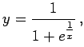

Inhalt Index DeskTop Bronstein

 Differentialrechnung Differentiation von Funktionen einer Veränderlichen Bestimmung von Extremwerten und Wendepunkten
Differentialrechnung Differentiation von Funktionen einer Veränderlichen Bestimmung von Extremwerten und Wendepunkten


Das betreffende Intervall der unabhängigen Variablen wird in Teilintervalle zerlegt, in denen die Funktion differenzierbar ist. Die globalen Extremwerte sind dann unter den relativen Extremwerten der Teilintervalle und den Funktionswerten in den Randpunkten der Teilintervalle zu finden.
| Beispiel A |
|
Intervall Größter Wert bei x = 0 (linke Abbildung). |
| Beispiel B |
|
Intervall Größter Wert bei x = +2 (rechtes Intervallende, rechte Abbildung). |
| Beispiel C |
|
 Intervall Größter Wert Festlegung: y = 1 für x = 0 (dritte Abbildung von links). |
| Beispiel D |
|
|